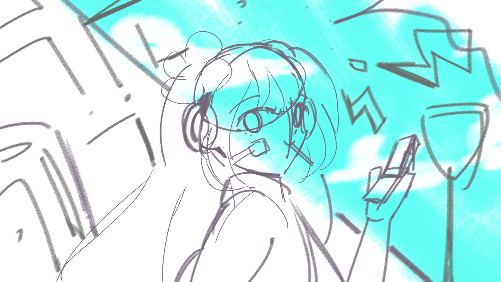

使用媒材Tools
- After Effects
- Procreate
- Clip Studio
負責項目responsible
- 概念設計
- 人物繪製分層
- AE動畫
作品影片Video
簡介Introduction
這是我大一上學期的期中作業。
由於我自己是初音未來的資深粉絲，又非常喜歡Weekender Girl這首歌。
所以就想為這首可愛活潑的歌量身打造一隻動畫MV，初音是剛下課走在街上的少女，想要把放學很開心的感覺表現出來。
那時候我剛學AE不到半年，對於AE的掌握度還不是很高。
從繪製人物到分層，還用各種插件做輔助，這隻動畫我花了整整一個月才完成。
更多其實是我對於AE技巧的實驗與學習。
製作過程Progress
